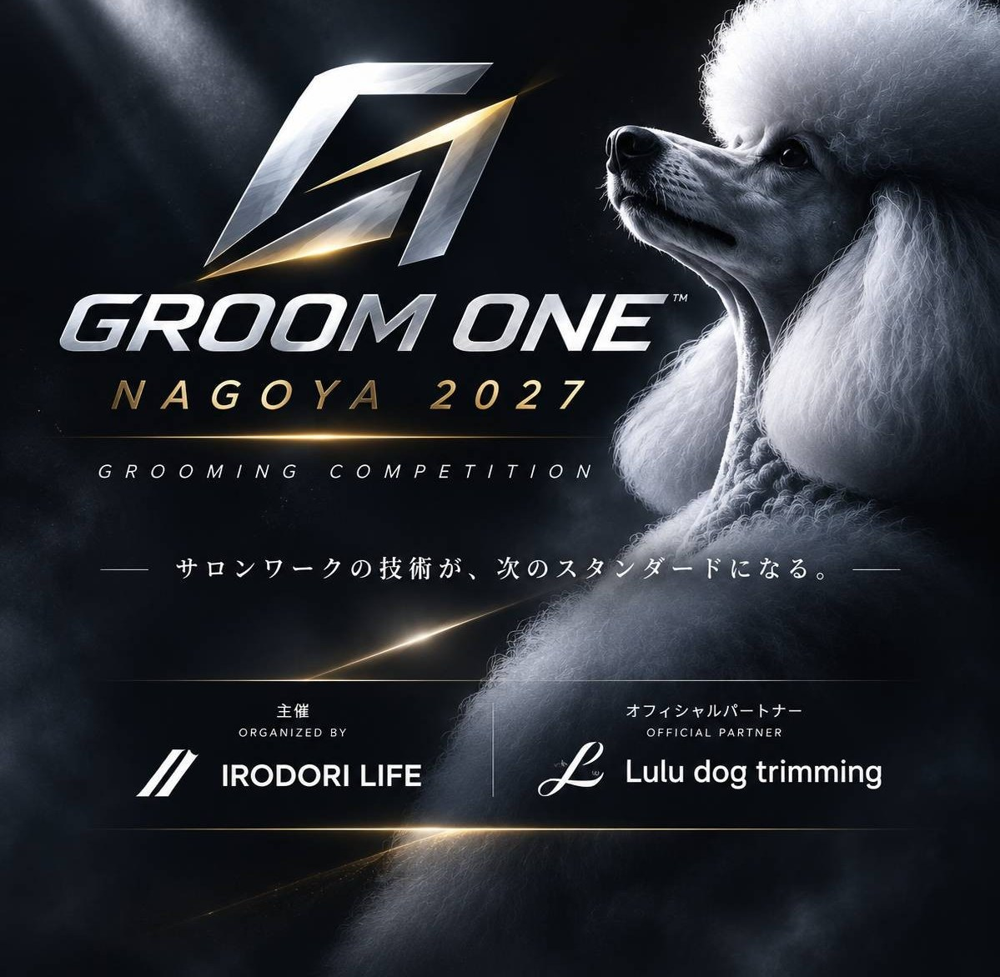

Entry
ご参加をお考えの方へ
募集要項と、専用の申込フォームを準備しています。
受付開始までもう少しお待ちください。
参加費・支払い方法は後日ご案内します。
トリマーのための、グルーミングコンテスト。
サロンワークの技術が、
次のスタンダードになる。
GROOM ONE NAGOYA 2027

A NEW STAGE FOR EVERY GROOMER.
一頭一頭と向き合い、似合うスタイルを探す。
いつものサロンワークには、
あなたが磨いてきた技術が詰まっています。
GROOM ONEは、その技術を発表するためのコンテストです。
学生も、経験を重ねたトリマーも。
プロの評価に触れながら、これからの仕事につながる
学びを持ち帰る一日を、名古屋で。
学生から現役トリマーまで。
今の自分に合ったクラスで、ご参加いただけます。
ネクストグルーマー
学んできたことを、実践の場へ。
はじめての挑戦を後押しするクラスです。
ライジング
日々のサロンワークで身につけた技術を、
次のステップにつなげるクラスです。
サロンプロ
磨き続けてきた技術と、その人らしさを。
経験あるトリマーのためのクラスです。
すべてのクラスで共通です企画時点の競技規定
※ 経験年数の算定基準、定員、選考方法、モデル犬の条件・事前処理等の詳細は、正式な募集要項でご案内します。
競技の審査に加え、
個別フィードバックを予定しています。
BUBBLES DOG
国内外のグルーミングコンテストで受賞歴を持つ。NEXT GROOMERの審査を担当予定。
サロンワークの技術・経験をもとに審査
サロンワークで培った技術と経験から、競技者の技術力や仕上がりを審査予定。
Dog Berry 代表
国内コンテストでの受賞経験を持ち、技術指導や後進の育成にも取り組む。
※ 提供された企画資料に基づく紹介です。正式なプロフィールは確認のうえ更新します。各矢印からInstagramをご覧いただけます。
2027年3月11日（木）
専門学校 名古屋ホスピタリティ・アカデミーにて開催予定
NEXT GROOMER 競技
審査・表彰
RISING・SALON PRO プレジャッジ
RISING・SALON PRO 競技
審査
表彰式・個別フィードバック
※ 受付時間・進行・会場使用時間は調整中です。
NEXT GROOMERは学生・実務経験1年未満の方を対象とする予定です。学生を優先し、主催者側で出場者を選定予定です。参加費や選考方法は、正式な募集要項でお知らせします。
犬種は自由・ミックス犬も可としています。モデル犬の手配、健康・ワクチン条件、事前処理、使用できる道具・設備については確認中です。
他校の学生も参加可能とする予定です。学校向け企画資料では、学校関係者（教員・講師等）の引率は認めない条件が示されています。正式な参加条件は募集要項でご案内します。
申込フォーム・支払い方法・キャンセルや返金規定は準備中です。見学の可否や問い合わせ窓口も、決まり次第このページでお知らせします。
募集要項と、専用の申込フォームを準備しています。
受付開始までもう少しお待ちください。
参加費・支払い方法は後日ご案内します。